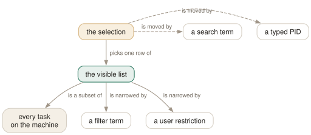

Day 04
Finding a process
Search moves the selection, filter changes the list — and confusing the two wastes an afternoon.
By the end of today you can
- choose between search, filter, the user menu and a PID jump without thinking
- spot from the function bar alone that a filter is still narrowing your list
- start htop already pointed at the processes you came for
Two levels, four keys
htop gives you four ways to find a process and they sit on two different levels. Filter and the user menu change which rows exist. Search and a typed PID only move the selection. Almost every complaint about htop's searching comes from reaching for one when you meant the other.
The distinction matters more than it sounds, because the two compose in one direction only. A filter removes rows, and a search cannot then find them — so a stale filter makes processes genuinely invisible, while a stale search does nothing at all.

Search: the selection moves, the list does not
F3 or / opens an incremental search over command lines. The selection moves to the first match as you type, and the list underneath is untouched — same rows, same order, same length.
PID USER PRI NI VIRT RES PRIV S CPU%▽MEM% TIME+ Command
8268 jhrcek 20 0 1454G 422M 251M S 0.9 0.7 1:36.09 chrome --type=re
5435 jhrcek 5 -15 12.6G 346M 0 S 0.5 0.5 0:23.78 gnome-shell
5455 jhrcek 20 0 12.6G 346M 0 S 0.5 0.5 0:07.88 gnome-shell
F3Next S-F3Prev EscCancel Search: chrome
Note that gnome-shell is still on screen: search narrowed nothing. F3 walks forward through the matches, Shift-F3 walks back, Esc cancels.
Filter: the list shrinks
F4 or \ hides every row that does not match. The matching is case-insensitive and uses fixed strings, not regular expressions — so . and * match themselves and nothing else. Separate alternatives with |.
\chrome # every process whose command line contains 'chrome'
\CHROME # the same rows; matching is case-insensitive
\chrome|ptyxis # either term
\chr.*me # matches nothing: '.' and '*' are literal
Two keys leave the prompt and they do opposite things. Enter means “keep this filter, hide the prompt”. Esc means “throw the filter away”.
Whole-user and single-PID shortcuts
u opens a list of every user with processes on the machine, All users at the top. Move with the arrows, Enter to apply, Esc to back out. It is a narrowing like the filter, not a search.
Typing digits jumps the selection to that PID. There is no prompt, no echo and no confirmation — the selection simply moves, and if you mistype you land somewhere arbitrary. It is the fastest route from a PID in a log file to a row on screen, and it is worth knowing precisely because it gives no feedback: the absence of a prompt is not the absence of an effect.
Arriving already narrowed
Every one of these has a command-line form, which is usually the better move — you were going to type something anyway.
htop -Fterm- Start filtered. Same semantics as F4: fixed strings, case-insensitive,
|for alternatives. htop -ppid,pid- Show exactly these PIDs. A frozen set — nothing new ever joins it.
htop -u- Your own processes.
htop -uuser- One user's. A numeric UID works, despite what
--helpimplies.
$ htop -u postgres # the database, and nothing else
$ htop -F 'nginx|php-fpm' # one stack, live text match
$ htop -p $(pgrep -d, nginx) # exactly today's nginx PIDs, frozen
Today's habit
Pick the one thing you look for most often — your app, your database, your build agent — and write the invocation down as a shell alias today. htop with no arguments is for exploring; htop -u postgres is for working.
Tomorrow: sorting and the tree, and why choosing a sort column throws you out of tree view.
New vocabulary
Keys
| Key | Does |
|---|---|
| F3/ | Incremental search: move the selection to the next match. Does not hide anything. |
| F3 | While searching: jump to the next match. Shift-F3 goes backwards. |
| F4\ | Incremental filter: hide every row that does not match. |
| Enter | In the filter prompt: keep the filter and put the prompt away. |
| Esc | In the filter prompt: clear the filter. In search: cancel it. |
| u | Open the user menu and show only one user's processes. |
| Digits | Type a PID and the selection jumps to it. Silently — there is no prompt. |
Commands
| Command | Does |
|---|---|
htop -F chrome | Start with the filter already applied. Multiple terms: -F 'nginx|php'. |
htop -p 1,843 | Show only these PIDs, and nothing else ever appears. |
htop -u | Show only your own processes. |
htop -u postgres | Show one user's processes. A numeric UID works too. |
Drillsdo these in a real terminal, today
Self-check
Answer out loud first, then unfold.
You filter for postgres, press Enter, get distracted, and come back twenty minutes later convinced that every other process on the box has died. What happened, and what is the one pixel that would have told you?
Enter means “keep this filter and put the prompt away”, not “cancel”. The prompt line vanishes and the ordinary function bar comes back, so the screen looks entirely normal — it is just showing you four rows.
The tell is the case of one label: the bar reads F4FILTER in capitals while a filter is active, and F4Filter when it is not. To actually clear it, press F4 again to reopen the prompt and then Esc — which is precisely the sequence the manual page gives, and precisely the one nobody reads until this has happened to them.
You want to find sshd, so you type sshd at the list. htop attaches strace to a random process instead. Why, and what is the rule?
Because s is bound to “trace syscalls with strace”, and bindings win on the first character. htop will fall through to a search only for letters that are not bound to anything — and most letters are bound to something.
The rule is simply to press / first, always. Typing a name directly works often enough to feel like a feature and fails destructively often enough to be a trap: x opens file locks, p changes your Command column, t throws you into tree view, and k opens the kill menu.
Search and filter both take “part of a command line”. When is search the right tool and when is filter?
Search when you want to act on one process: it moves the selection and leaves the list intact, so you keep your sense of where that process sits relative to everything else — still the third-busiest thing on the machine, still below the browser.
Filter when you want to study a group: all eleven Postgres backends, all the containers of one service. You lose the context of the whole machine and gain a list you can read without scrolling. The giveaway is whether your question has the word “all” in it.
Your colleague runs htop -F nginx and reports “nginx is using 12 processes”. You run htop -p $(pgrep -d, nginx) and get 8. Who is right?
Both, about different questions. -F matches the text of the command line, so it catches anything with “nginx” anywhere in it — a log tailer, an nginx -t you left running, a shell whose history happens to contain the word, and every thread of every match.
-p takes an explicit list of PIDs, so it shows exactly those and never anything else — including never showing new nginx workers that start after htop did. -F is a live text match; -p is a frozen set. Neither is wrong, but only one of them will still be telling the truth after a reload.
Cheat sheet
F3 / search -- moves the SELECTION, list unchanged
F3 next, Shift-F3 previous, Esc cancel
F4 \ filter -- hides non-matching rows
Enter = keep it (prompt hides!), Esc = clear it
u user menu; Enter applies, Esc cancels
digits jump to that PID -- silent, no prompt
filter matching: case-insensitive, FIXED STRINGS (no regex), | separates terms
filter still on? the bar reads F4FILTER in caps, F4Filter when off
never type a name at the list: s=strace x=locks p=paths t=tree k=kill
htop -F term start filtered (live text match)
htop -p 1,843 exactly these PIDs (frozen set)
htop -u [user|uid] one user, or yourself
Everything through Day 04
Keys
| Key | Does |
|---|---|
| Ctrl-L | Redraw the screen and recalculate, without waiting for the next tick. |
| Z | Pause and resume sampling. The screen freezes; the machine does not. |
| F10q | Quit. This is also the only exit that saves your settings. |
| UpDown | Move the selection one row. Alt-k and Alt-j do the same. |
| PgUpPgDn | Move the selection a screenful at a time. |
| HomeEnd | Jump to the first or the last process in the list. |
| LeftRight | Scroll the whole list sideways. Also Alt-h and Alt-l. |
| Ctrl-A^ | Scroll back to the start of the selected process's line. |
| Ctrl-E$ | Scroll to the end of the selected process's line. |
| Alt-UpAlt-Down | Pan the view without moving the selection. Shift-Up/Shift-Down too, if your terminal lets them through. |
| p | Toggle full program paths in Command. |
| m | Toggle merging exe, comm and cmdline into Command. |
| F3/ | Incremental search: move the selection to the next match. Does not hide anything. |
| F3 | While searching: jump to the next match. Shift-F3 goes backwards. |
| F4\ | Incremental filter: hide every row that does not match. |
| Enter | In the filter prompt: keep the filter and put the prompt away. |
| Esc | In the filter prompt: clear the filter. In search: cancel it. |
| u | Open the user menu and show only one user's processes. |
| Digits | Type a PID and the selection jumps to it. Silently — there is no prompt. |
Commands
| Command | Does |
|---|---|
htop | Start htop, reading ~/.config/htop/htoprc once at startup. |
htop -d 10 | Sample every 10 tenths of a second. Clamped to the range 1–100. |
htop -n 5 | Draw five frames, then exit on its own. Absent from the manual page. |
htop -V | Print the version. The -v in the SYNOPSIS does not exist. |
htop -F chrome | Start with the filter already applied. Multiple terms: -F 'nginx|php'. |
htop -p 1,843 | Show only these PIDs, and nothing else ever appears. |
htop -u | Show only your own processes. |
htop -u postgres | Show one user's processes. A numeric UID works too. |
Options
| Option | Does |
|---|---|
delay | Tenths of a second between samples in htoprc. Default 15, i.e. 1.5 s. |
M_VIRT | Address space the process has mapped. VIRT. Mostly promises, not memory. |
M_RESIDENT | Pages actually in RAM, shared ones counted in full. RES. |
M_SHARE | The part of RES that other processes also map. SHR. |
M_PRIV | Resident minus shared — what dies with the process. PRIV, a default column. |
M_SWAP | Pages of this process pushed out to swap. SWAP. |
M_PSS | Resident, but each shared page divided by its number of sharers. PSS. |
M_PSSWP | The same proportional treatment for swapped-out pages. PSSWP. |
M_EPSS | PSS plus PSSWP: the whole footprint, proportionally. EPSS. |
PERCENT_MEM | RES as a share of total RAM. MEM% — and it inherits RES's double counting. |